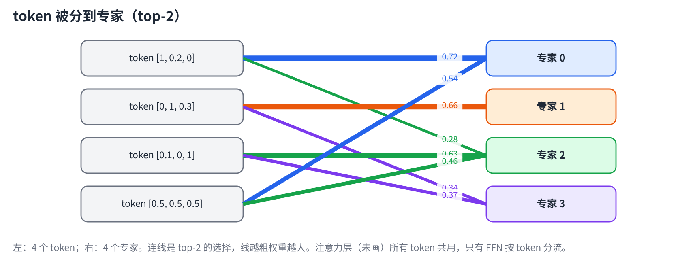
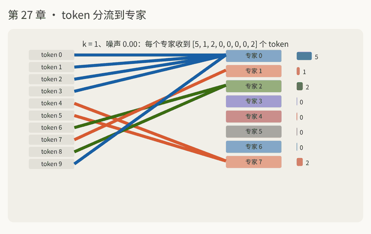

第 27 章 · MoE：很多个 FFN 专家，每个词只走其中几个
本地运行
git clone https://github.com/wikieden/beyond-transformer
cd beyond-transformer/code/notebooks
pip install jupyterlab torch numpy
jupyter lab ch27_moe_router.ipynb也可以下载后直接用 VS Code 打开 .ipynb 运行。需要 GPU 的章节在 Colab 里选「代码执行程序 → 更改运行时类型 → GPU」。
本章回答：想让模型“知道得更多”，就得加参数；可参数一多，每个 token 的计算也跟着涨。MoE 怎么做到参数翻好几倍、每个 token 的计算却几乎不变？router 是怎么决定一个 token 去哪几个专家的？top-k 之后的 softmax 为什么只在选中的专家上做？noisy top-k 的噪声在帮什么忙？Mixtral 8×7B 为什么是 47B 参数、却只有 13B 在干活？
讲解日期：2026-11-26 · 上一章：第 26 章 读源码 · 下一章：第 28 章 负载均衡
对应原文：CS336cs336-spring2025/materials/text/2025 Lecture 4 - MoEs.txt（当目录读：为什么 MoE、路由、均衡、系统）；Outrageously Large Neural Networkstransformer-deep-dive/materials/text/papers/sparsely-gated-moe-1701.06538.txt§2 Noisy Top-K Gating L195–L215（式 3–5：G(x) = Softmax(KeepTopK(H(x), k))，H(x) = x·W_g + 噪声·Softplus(x·W_noise)）；Mixtralmixtral-2401.04088.txt摘要 L22（47B 参数、13B 激活）、Figure 1 L46（8 个专家选 2）、§2 式 (1) L114–L120（y = Σ Softmax(Top2(x·W_g))_i · SwiGLU_i(x)）
本章缩写：MoE = Mixture of Experts（专家混合）；expert（专家：一个独立的 FFN）；router / gate（路由器 / 门控：给专家打分的小线性层）；W_g = 门控矩阵（d × E）；E = 专家个数；top-k（取分数最高的 k 个）；KeepTopK（只保留前 k 个分数，其余设成 −∞）；Softplus = log(1 + e^x)（一个光滑的正函数）；active parameters（激活参数：每个 token 实际参与计算的参数）。全部缩写见 附录 · 缩写与术语表
讲解
第一步：为什么要 MoE：参数多、计算少（2026-11-26）
类比：医院分科。 一个全科医生什么都要会，培养成本（参数）和每次看病的时间（计算）都很大。分成很多科室，每个病人只去一两个相关的科，医院整体的知识（总参数）很多，但每个病人花的时间（激活参数）不变。
MoE 把 Transformer 块里的 FFN 换成 E 个“专家”FFN，外加一个 router。每个 token 只送进其中 k 个专家（通常 k = 1 或 2，现在也常见 8 个小专家），其余专家对这个 token 不算。
- 总参数：E 份 FFN，决定模型能“记住”多少；
- 激活参数：k 份 FFN，决定每个 token 的计算量（第 8 章：FLOPs ≈ 2 × 激活参数）。
注意力层不变，大家共用。
一句话：MoE 把 FFN 换成很多个专家，每个 token 只走 k 个；总参数很多、每个 token 的计算只和 k 个专家有关。
第二步：router：打分、选 top-k、在选中的里做 softmax（2026-11-26）
router 就是一个 d × E 的矩阵 W_g：token 的隐状态 x 乘它，得到每个专家的分数。Mixtral 的式 (1)（L114–L120）：
先取分数最高的 k 个，只在这 k 个上做 softmax（其余设成 −∞，权重为 0），再用权重把这 k 个专家的输出加起来。
数字演示（4 个专家，d = 3，玩具专家 E_e(x) = scale_e·x，scale = [1, 2, −1, 0.5]，选 top-2）：
| token | 分数 x·W_g | 选中 | 权重 | 输出 |
|---|---|---|---|---|
| [1, 0.2, 0] | [1.06, −0.3, 0.12, 0.04] | 0、2 | 0.719、0.281 | [0.438, 0.088, 0] |
| [0, 1, 0.3] | [0.24, 1.03, −0.1, 0.35] | 1、3 | 0.664、0.336 | [0, 1.496, 0.449] |
| [0.1, 0, 1] | [−0.1, 0.05, 1.02, 0.5] | 2、3 | 0.627、0.373 | [−0.044, 0, −0.441] |
| [0.5, 0.5, 0.5] | [0.55, 0.3, 0.4, 0.35] | 0、2 | 0.537、0.463 | [0.037, 0.037, 0.037] |
不同 token 走不同的专家组合。top-k 本身不可导，但选中专家的权重是 softmax 出来的，可导：梯度会把“选对了的专家”的分数推高。

图 27-1 · 4 个 token（左）和 4 个专家（右），连线是 top-2 的选择，线越粗权重越大。注意力层（未画）所有 token 共用，只有 FFN 按 token 分流一句话：router 用 x·W_g 给专家打分，取前 k 个、只在这 k 个上 softmax 得到权重，输出是 k 个专家输出的加权和。
第三步：noisy top-k：加噪声，让冷门专家也有机会（2026-11-26）
Shazeer 等 2017 的式 (3)–(5)（L195–L215）：
打分时加一个随机噪声，幅度由另一个可学矩阵 W_noise 决定（Softplus 保证幅度为正）。作用：训练初期，router 稍微偏向某几个专家，它们被训练得更好、分数更高，于是更受偏爱，形成“富者愈富”；噪声让排名靠后的专家偶尔也能被选上、得到训练（负载均衡，第 28 章接着讲）。
数字演示（第 4 个 token，原始分数 [0.55, 0.3, 0.4, 0.35]，噪声幅度 Softplus(...) ≈ 0.94）：
| 噪声（标准正态的一次采样） | 加噪后的分数 | 选中 |
|---|---|---|
| 0 | [0.55, 0.3, 0.4, 0.35] | 0、2 |
| [0, 0.6, −0.5, 0.3] | [0.55, 0.87, −0.07, 0.63] | 1、3 |
| [−1, 0, 0, 0.5] | [−0.39, 0.3, 0.4, 0.82] | 2、3 |
分数接近时，噪声决定了选谁。推理时不加噪声。现在的大模型多数不用这种噪声，改用第 28、30 章的均衡方法。
一句话：noisy top-k 在打分上加可学幅度的噪声，打破“富者愈富”，让冷门专家也被训练到。
第四步：参数账：Mixtral 8×7B（2026-11-26）
Mixtral（摘要 L22，Figure 1 L46）：结构和 Mistral 7B 一样（第 23 章），每层的 FFN 换成 8 个 SwiGLU 专家、每个 token 选 2 个。
数字演示（d = 4096、d_ff = 14336、32 层、词表 32000、GQA 8 组）：
| 部分 | 参数 |
|---|---|
| 注意力（32 层） | 1.34B |
| 专家（32 层 × 8 个 × 3·d·d_ff） | 45.10B |
| router | 0.001B |
| 嵌入 + 输出层 | 0.26B |
| 总参数 | 46.7B |
| 每个 token 激活（专家只算 2 个） | 12.9B |
和论文的 47B / 13B 对上。名字叫 8×7B，但不是 56B：注意力和嵌入是共用的，只有 FFN 有 8 份。显存要装下 47B，计算只按 13B 算：MoE 省的是计算，不省显存。
场景代码：一个最朴素的 top-2 MoE 层（PyTorch 写法；本书 chapter-code 只用 NumPy，这段没跑过）：
logits = self.gate(x) # (T, E)
w, idx = logits.topk(2, dim=-1) # 每个 token 选 2 个专家
w = w.softmax(dim=-1) # 只在选中的 2 个上 softmax
y = torch.zeros_like(x)
for e, expert in enumerate(self.experts):
tok, slot = (idx == e).nonzero(as_tuple=True) # 哪些 token 选了专家 e
y[tok] += w[tok, slot, None] * expert(x[tok]) # 只算这些 token
真实实现会把 token 按专家排序、批量算（grouped GEMM），多卡时把专家分到不同的卡上（专家并行）。写一个完整的 MoE FFN（含三种均衡方法）是里程碑 T-M6。
一句话：Mixtral 8×7B 共 47B 参数、每个 token 激活 13B；共用的是注意力和嵌入，8 份的只有 FFN；MoE 省计算不省显存。
动画演示：token 分流到专家

可交互版：animations/27-moe-router.html（滑块：每个 token 选几个专家 k、噪声大小）。
怎么看：
- 左边一列 token，右边 8 个专家，连线是选择，粗细是权重（第二步）；
- 右边柱子是每个专家收到的 token 数；k 从 1 拖到 4，激活的计算跟着变；
- 加大噪声：选择变得更分散，冷门专家也能分到 token（第三步）。
练习与作答记录
题 1（第二步）：4 个专家的分数 [2, 0, 1, −1]，选 top-2，权重是多少？（提示：e ≈ 2.718）
题 2（第四步）：一个 MoE 有 64 个专家、每个 token 选 8 个，每个专家 3·d·d_ff 参数（d = 2048、d_ff = 1024）、24 层。专家部分的总参数和每个 token 激活的专家参数各是多少？
题 3（第三步）：为什么推理时不加噪声？如果推理也加，会有什么问题？
口诀
医院分科：知识多（总参数），看病快（激活参数）；只有 FFN 分科，注意力共用。
打分、取前 k、只在选中里 softmax，加权求和。
加点噪声防富者愈富，推理时不加。
八乘七 B 不是五十六：共用的不重复，四十七 B 装着、十三 B 在算；省计算不省显存。
本章复习卡片
必背：B61（MoE 的总参数与激活参数、top-k router、noisy top-k、Mixtral 的参数账）。练习做完后，按答错、卡住的地方再补。
附录 · 延伸阅读
留给以后深入学习用，不影响本章主线。★ 是建议先读的。
推荐阅读
| 读什么 | 读哪里 | 读它为了什么 |
|---|---|---|
★ CS336 2025 Lecture 4 - MoEs.txt |
全部（当目录读） | MoE 的全景：为什么、路由、均衡、系统 |
| ★ Outrageously Large Neural Networks（Shazeer 等 2017） | §2 L195–L215 | noisy top-k gating |
| ★ Mixtral of Experts（2024） | 摘要 L22；§2 L114–L120 | 现代 MoE 的典型配置 |
| 《数学与实验统计》第 45 章 MoE | 全部 | 路由与均衡的数学 |
数学原理
- top-k 后的 softmax：只在 k 个分数上归一化，权重和为 1；未选中的专家梯度为 0。
- router 的梯度：∂y/∂(选中专家的分数) 通过 softmax 传回 W_g；没选中的专家分数得不到“被选中会怎样”的信号，这正是均衡问题的根源。
- FLOPs：每个 token 的 FFN 计算 ∝ k·3·d·d_ff，与 E 无关；router 只多 2·d·E。
公式清单
| 公式 | 意思 |
|---|---|
| \(y = \sum_{i\in\text{Top}k}\text{Softmax}(\text{Top}k(xW_g))_i E_i(x)\) | top-k MoE（Mixtral 式 1） |
| \(H(x)_i = (xW_g)_i + \mathcal N(0,1)\cdot\text{Softplus}((xW_{noise})_i)\) | noisy 打分 |
| 总参数 ∝ E，激活参数 ∝ k | 参数账 |
代码对照：把本章的数字用代码算一遍
NumPy。代码在仓库本地
beyond-transformer/solutions/chapter-code/ch27_moe_router.py，配套测试tests/test_ch27.py，notebook 在notebooks/ch27_moe_router.ipynb：
bash cd beyond-transformer/solutions/chapter-code uv run python ch27_moe_router.py uv run pytest tests/test_ch27.py
讲义 ↔ 代码：
| 讲义 | 公式 | 写法 | 跑出来 |
|---|---|---|---|
| 第二步 router | top-2 softmax | topk_gate、moe_forward |
第 1 个 token → 专家 0、2 |
| 第三步 噪声 | 式 (4) | noisy_logits(x, w_noise, noise) |
选择随噪声变 |
| 第四步 参数账 | 总 / 激活 | param_count(...) |
46.7B / 12.9B |
关键几行：
idx = np.argsort(-logits)[:k] # 取前 k 个
z = np.exp(logits[idx] - logits[idx].max()); g[idx] = z / z.sum() # 只在选中的上 softmax
return x @ WG + noise * np.log1p(np.exp(x @ w_noise)) # noisy：噪声 × Softplus 幅度
per_layer_active = attn_per_layer + router + (k + shared) * expert
代码里才看得到的 2 件事：
- 两种权重写法：Mixtral 先取 top-k 再 softmax；Switch、DeepSeek 等是先对全部专家 softmax 再取 top-k（权重不再加起来是 1，有的会再归一化）。两种在 k = 1 时差别很大，读代码要看清楚是哪种。
- 专家输出是“逐 token 加权”：同一个专家对不同 token 的权重不同；这里的玩具专家是线性的，真实专家是 SwiGLU。
自己改一改（不影响练习答案）：
- 把
topk_gate的 k 改成 1，第 4 个 token 的输出变成多少？ - 把
param_count的专家数改成 16、k 仍为 2，总参数和激活参数各变多少？